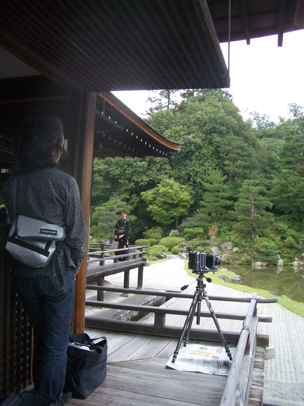
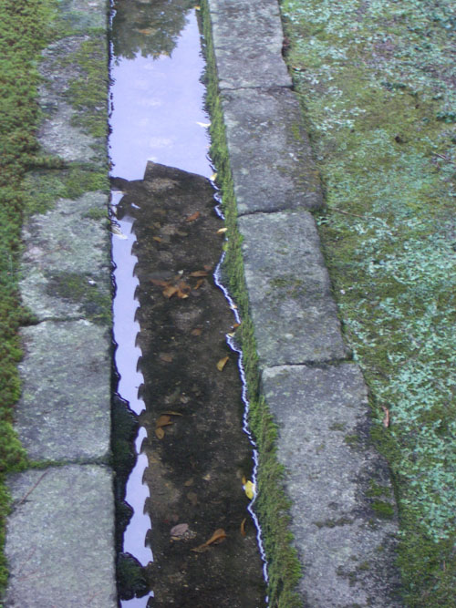
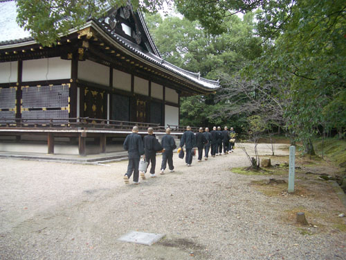
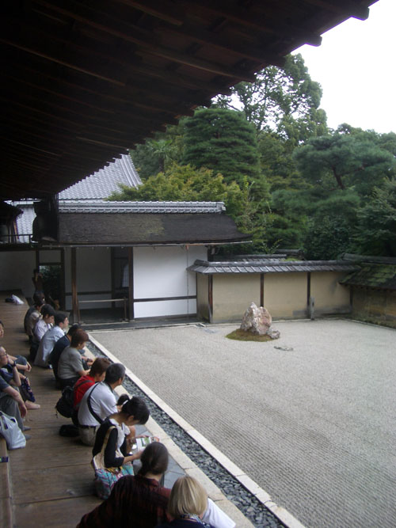
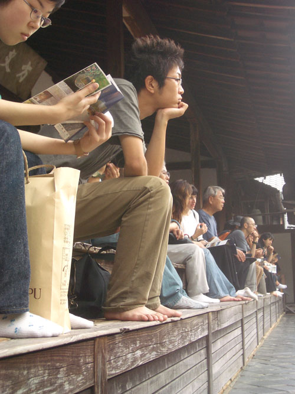
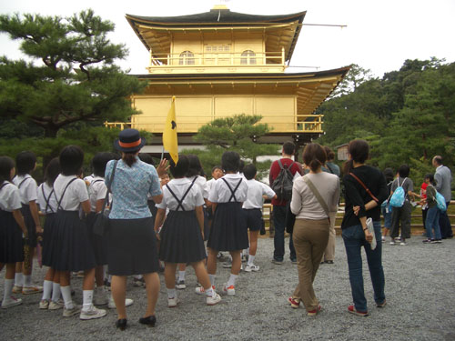
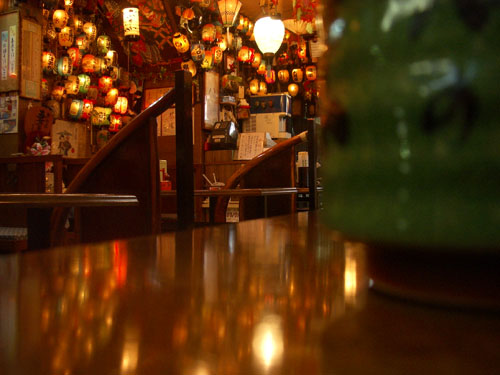
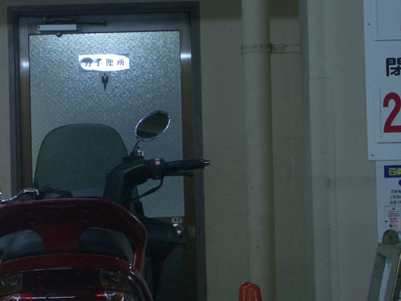

| < | > |
| Comparative temples | [2004-10-08 00:29] |
| What would today hold? When I had first planned this trip I had thought to avoid all the obvious places, but now the simplicity of ticking them off a list had its charm. First on the list was Ninnaji.  This was a beautiful interlocking set of buildings that looked like the edge of a dream. There was a bunch of professional photographers scrambling about preparing for a shoot – some cosmetic ad upon a glossy page, carefully sculpted out of the damp creaky floorboard reality.  It was difficult to put the camera in front of one's eye when all it could capture was what had been framed many times before. Better to prowl about drinking in the novelty of one's own direct experience.  As we were wandering in the upper reaches of the temple grounds this troop of dedicated cleaners appeared from between the trees and filed past us, eyes front, without so much as a waver. Guardians of the celestial bucket and sponge. * Next stop was Royanji, home of that famous view of the stones.  The beauty here was the way that the familiar flat image opened out into a quaint diminutive 3D version of what one had always assumed it would look like in one's mind. That, and the absence of time. People came and sat.  The wild beast, Humanity, tamed by its own expectations. * Long ago I had bought a postcard of Kinkakuji, the Golden Pavilion. It had hung around for years on walls and windowsills emanating faraway magical Japan vibes. Now finally it was in front of me in all its tawdry garishness.  I felt sympathy for that kid who had burnt down the original. How his ghost must itch to get a little flame on that hideous replacement. * Temples done and dusk descending, we headed into town to eat. It was not easy for us to workout where to eat. After sometime vacillating in front of unintelligible menus, João did a little networking with a local pottery shop keeper and we ended up in this noodle bar with the walls all covered in lanterns. João had soba, I had udon – both sticking to our preference.  As we made our way through the busy nocturnal streets of downtown Kyoto, heading for the central station and the last bus back home to Tumbridge Wells, a sudden and desperate emergency occurred. Luckily I found one.  |
|